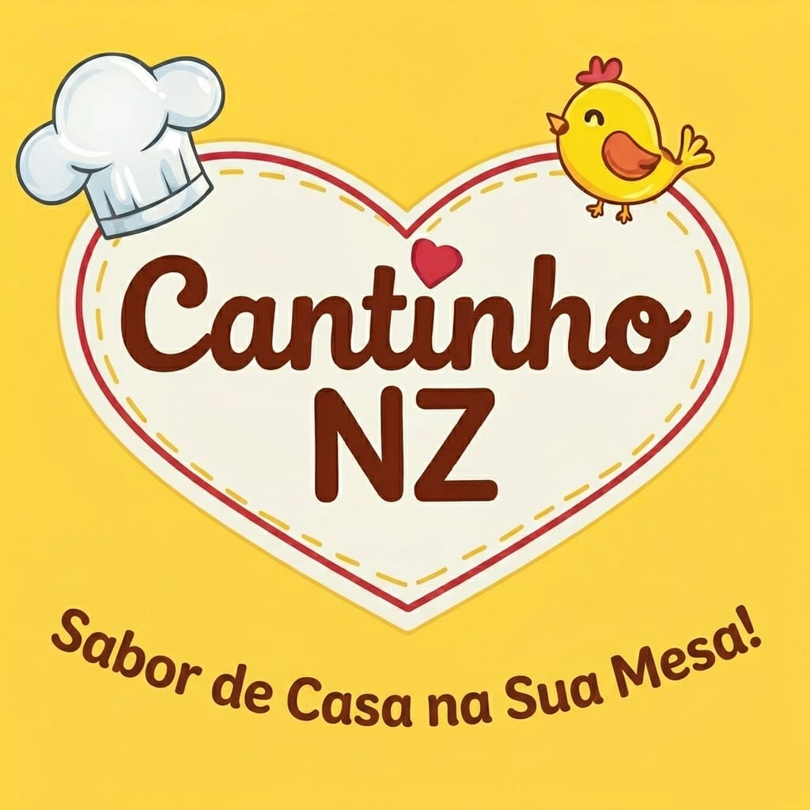

Cantinho NZ
Quentinhas caseiras — peça pelo site ou fale com a gente no WhatsApp
Falar no WhatsApp Ver cardápio e pedirCantinho NZ · Sabor de casa na sua mesa

Quentinhas caseiras — peça pelo site ou fale com a gente no WhatsApp
Falar no WhatsApp Ver cardápio e pedirCantinho NZ · Sabor de casa na sua mesa